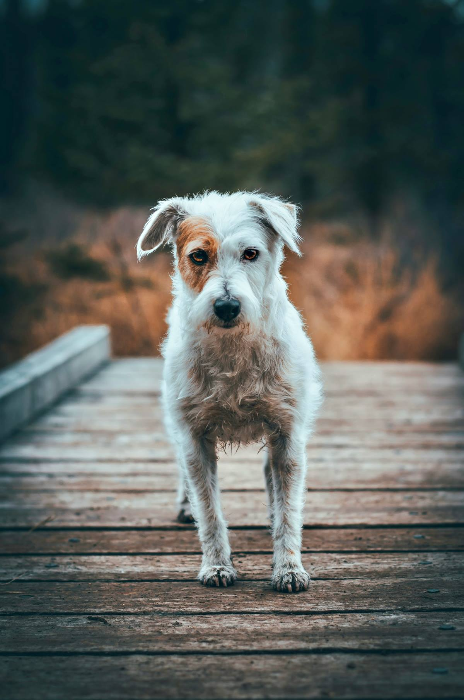
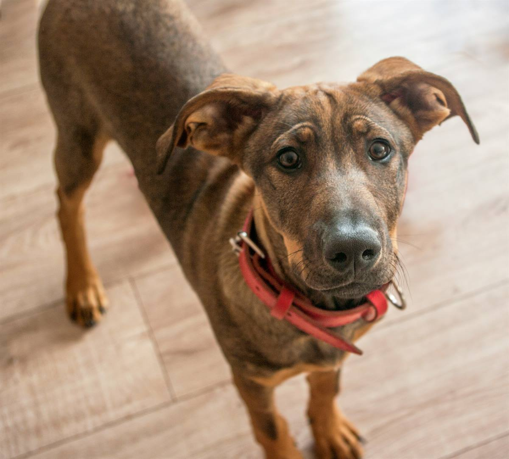
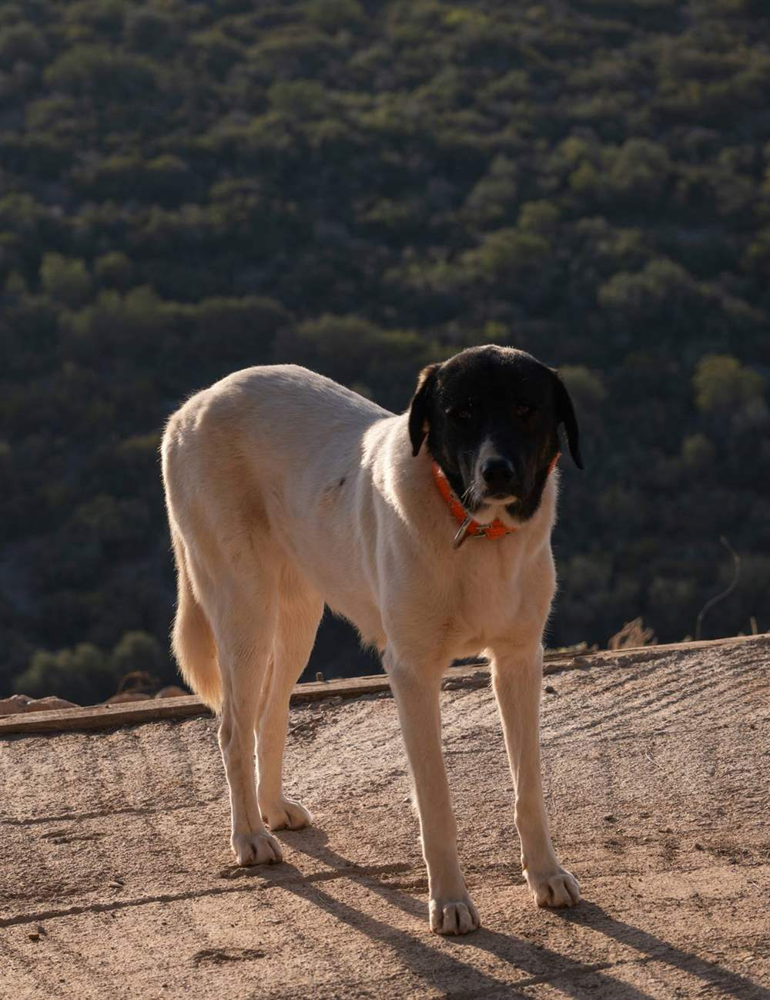
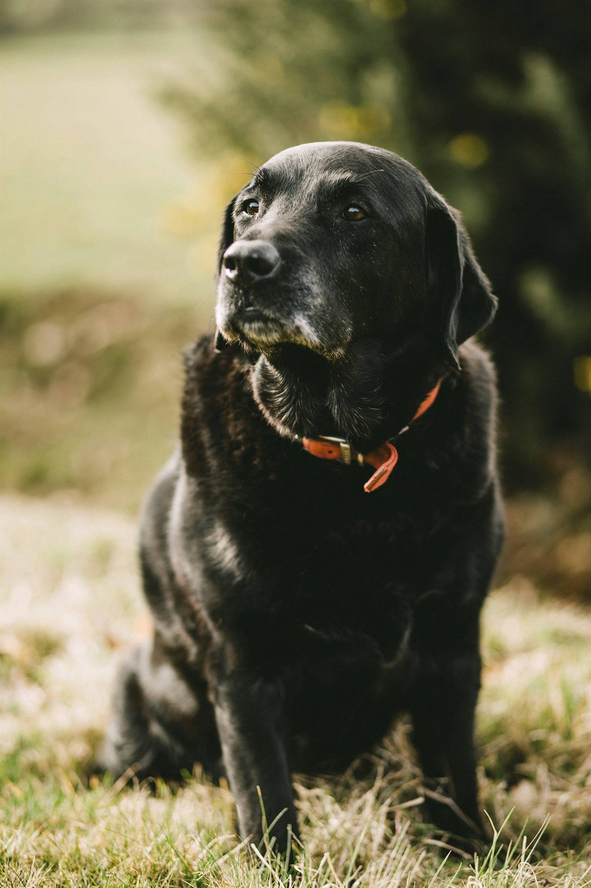
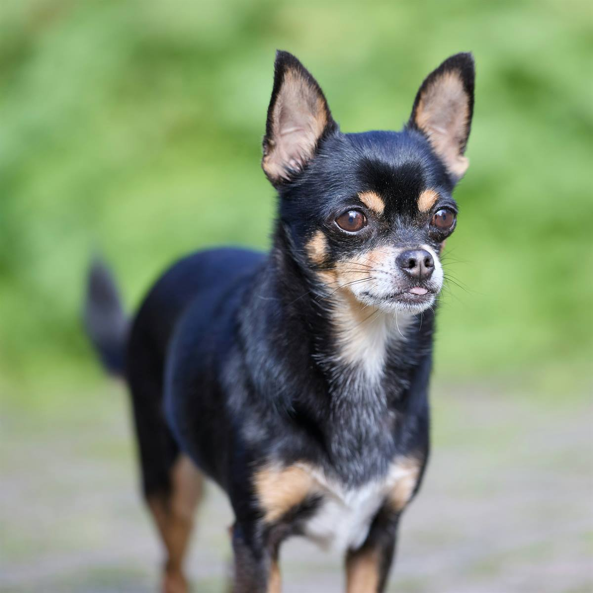
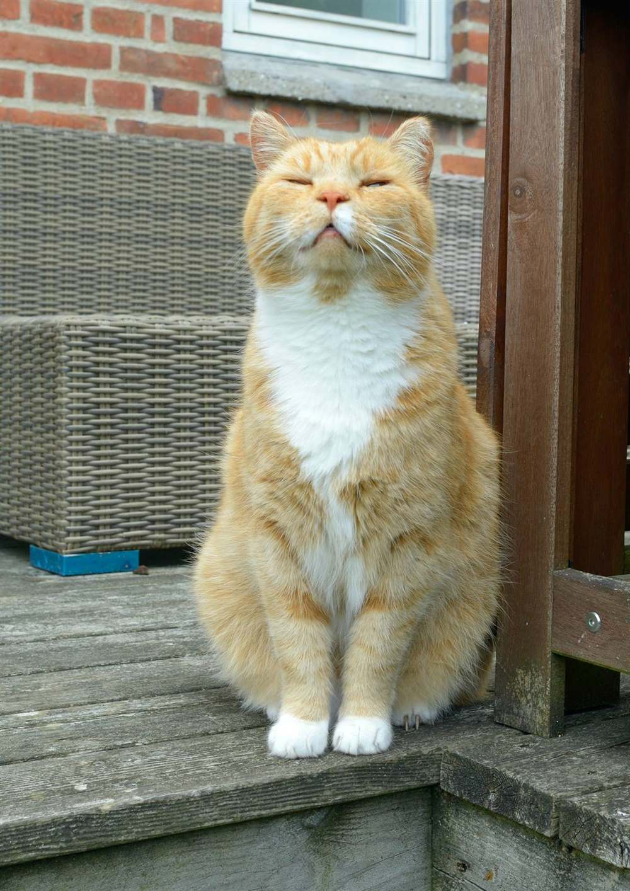

Animales en adopción
Todos los animales de esta página están sanos, vacunados, desparasitados y castrados. Se entregan con su carnet y con seguimiento durante los primeros seis meses.
La adopción es gratuita. Lo único que pedimos es una entrevista y una visita a tu casa.
Listado de animales disponibles
| Nombre | Especie | Edad | Sexo | Tamaño | Hogar actual |
|---|
Fichas de los animales
-

Luna - 3 años - Mediana - Tranquila y muy sociable con chicos. -

Toby - 1 año - Mediano - Muy jugador, necesita paseos largos. -

Milo - 4 años - Grande - Ideal para una casa con patio. -

Nala - 9 años - Grande - Adulta mayor, busca una casa calma. -

Rocco - 6 años - Pequeño - Se lleva bien con otros perros. -

Michi - 5 años - Mediano - Acostumbrado a vivir en departamento.
Cómo adoptar
- Mirá las fichas y elegí uno o dos animales que te parezca que encajan con tu casa.
- Escribinos desde Contacto con el motivo «Adopción».
- Hacemos una entrevista por teléfono o en el refugio, sin apuro.
- Coordinamos una visita a tu casa para ver que sea segura para el animal.
- Te presentamos al animal y, si hay química, firmamos el acta de adopción.
- Te lo llevás con su carnet de vacunas y el certificado de castración.
- Durante seis meses nos escribimos para ver cómo va la adaptación.